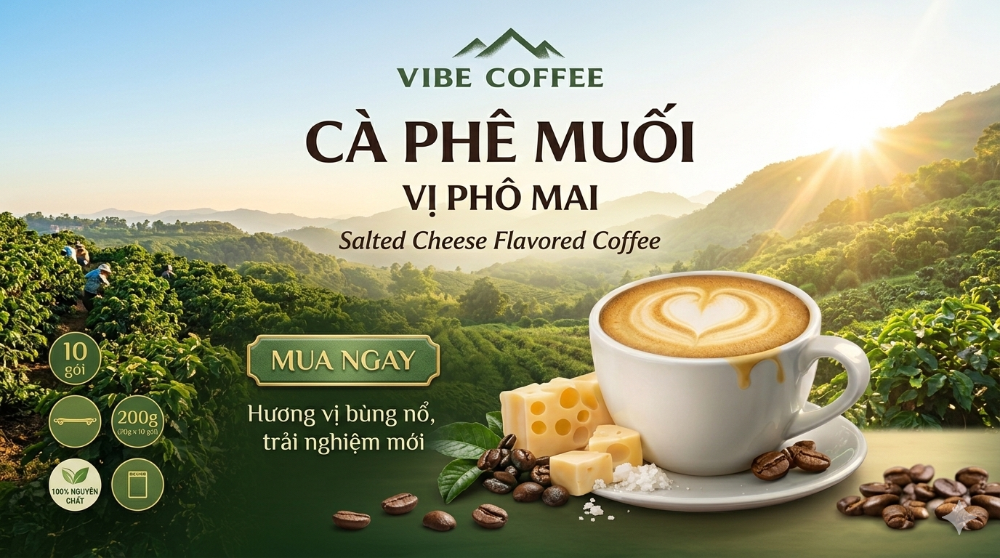

Cà phê hòa tan là lựa chọn quen thuộc trong nhịp sống hiện đại: nhanh – tiện – nhưng vẫn cần ngon. Vì vậy, nhiều gia đình Việt ưu tiên loại cà phê pha được trong vài giây mà vẫn giữ “vibe” chuẩn vị.
Tại VIBE COFFEE, chúng tôi không chỉ tạo ra cà phê hòa tan, mà còn tối ưu trải nghiệm thưởng thức như ở quầy ngay tại nhà. Vậy cà phê hòa tan là gì, và làm sao để chọn đúng loại ngon – phù hợp với bạn?
Cà phê hòa tan là gì?
Cà phê hòa tan (Instant Coffee) là cà phê được chiết xuất từ hạt cà phê nguyên chất, sau đó sấy khô thành dạng bột hoặc hạt. Chỉ cần:
- 1 gói cà phê
- Nước nóng hoặc lạnh
Bạn đã có ngay một ly cà phê hoàn chỉnh trong vài giây.
2 phương pháp sản xuất phổ biến
- Sấy phun (Spray Drying): tạo bột mịn, chi phí tối ưu.
- Sấy lạnh (Freeze Drying): giữ hương vị tốt hơn, thường cao cấp hơn.
Điểm quan trọng: chất lượng cà phê hòa tan phụ thuộc vào nguyên liệu + công nghệ + công thức, không chỉ nằm ở “tên gọi”.
Hiểu đúng về cà phê hòa tan
Nhiều người nghĩ cà phê hòa tan “kém chất lượng”, nhưng thực tế:
- Vẫn có thể được làm từ 100% hạt cà phê thật
- Vẫn trải qua quy trình rang – chiết xuất nghiêm ngặt
- Vị ngon phụ thuộc vào chất lượng hạt và cách cân bằng công thức
VIBE COFFEE tập trung vào 3 yếu tố: nguyên liệu ổn định – công thức cân bằng vị – trải nghiệm uống như pha tại quầy.
Vì sao cà phê hòa tan ngày càng được ưa chuộng?
1) Tiện lợi – nhanh chóng
Chỉ 10–15 giây là có ngay ly cà phê. Phù hợp dân văn phòng và người bận rộn.
2) Dễ bảo quản
Gói nhỏ, tiện mang đi, không cần máy móc pha chế.
3) Đa dạng hương vị
Không chỉ cà phê đen/sữa truyền thống, còn có các vị sáng tạo như dừa, phô mai… để hợp nhiều “vibe” khác nhau.
4) Chi phí hợp lý
So với uống ngoài quán, cà phê hòa tan giúp tối ưu chi phí mà vẫn giữ trải nghiệm quen thuộc.
5) Linh hoạt cách uống
- Uống nóng buổi sáng
- Uống đá giải nhiệt
- Mix theo khẩu vị cá nhân
Bí quyết chọn cà phê hòa tan ngon
Nếu bạn muốn chọn cà phê hòa tan ngon cho gia đình, hãy ưu tiên:
- Nguồn gốc hạt cà phê: Arabica/Robusta chất lượng, thông tin vùng trồng rõ ràng.
- Thành phần minh bạch: hạn chế phụ gia, không mùi gắt, cân bằng vị tự nhiên.
- Thương hiệu uy tín: quy trình ổn định và tiêu chuẩn chất lượng nhất quán.
Gợi ý nhanh: mục tiêu cuối cùng là “thật vị” — không phải vị hóa học.
Cà phê hòa tan VIBE COFFEE có gì nổi bật?
Tại VIBE COFFEE, mỗi sản phẩm không chỉ là cà phê — mà là một “vibe” cảm xúc khác nhau:
- Cà Phê Muối Phô Mai: béo nhẹ – mặn nhẹ – ngọt cân bằng, trải nghiệm mới lạ.
- Cà Phê Dừa: hương dừa tự nhiên, thơm dịu, hợp xu hướng tropical.
- Cà Phê Sữa Đá: chuẩn vị cà phê sữa Việt Nam, đậm đà – dễ uống.
Điểm chung: dễ pha – dễ uống – dễ “ghiền” và giữ cảm giác uống cà phê thật.
Kết luận
Cà phê hòa tan không chỉ là giải pháp tiện lợi, mà còn là cách để bạn tiết kiệm thời gian, tận hưởng cuộc sống và vẫn giữ được gu cà phê riêng.
Nếu bạn đang tìm một loại cà phê: ngon – nhanh – khác biệt, VIBE COFFEE là lựa chọn phù hợp.
Bài liên quan: Cà phê chuẩn vị Việt – khi “vibe” cà phê trở thành trải nghiệm
Internal link: /san-pham • /ve-chung-toi
External link (nofollow placeholder): https://example.com